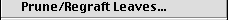

In RadCon similar commands are grouped together in drop-down menus which allow them to be quickly selected.
RadCon provides the user with seven menus.
Click on a menu to get more information.
The File menu includes commands for opening, printing, saving and closing files.
Click on a command to get more information.
The New command creates a new empty text file and associates it with an Edit window .
The Open... command either opens an existing text file and associates it with an Edit window or treats it as a tree file and attempts to input trees. The course of action depends upon the option choosen in the Open dialog box.
The Close command closes the active window. This command is not available if the Log window is the active window as the Log window cannot be closed.
The Save command replaces the contents of the text file, with which the active Edit window is associated, with the current contents of the Edit window.
The Save As... command saves the contents of the active window to a text file specified by the user. If the active window is the Log window or an Edit window the text is saved to a text file. Alternatively if the active window is a Trees window the trees are saved to a text file in NEXUS format.
The Save Graphics File... command saves the contents of the active Trees window as a pict graphics file.
The Page Set Up... command allows the user to set various printing options. Not available in this version.
The Print Preview command allows the user to view the contents of the active Trees window as they will appear when printed. Not available in this version.
The Print command prints the contents of the active window Not available in this version.
The Output File... command allows the user to create a text file to which the contents of the Log window can be written as they are generated.
The Log Output command allows the user to toggle on and off the logging of the contents of the Log window to the text file specified by the Output File... command.
The Execute command attempts to input trees from the active Edit window.
The Quit command causes RadCon to quit.The Edit menu includes commands for editing the text in an Edit window.
Click on a command to get more information.
The Undo command undoes the previous command.
The Cut command deletes the selected text in the active Edit window and saves it in the clipboard.
The Copy command saves a copy of the selected text in the active Edit window in the clipboard.
The Paste command replaces the selected text in the active Edit window with the text in the clipboard
The Clear command deletes the selected text in the active Edit window. If the active window is the Log window it deletes the contents of the Log window.
The Select All command selects all the text in the the active Edit window
The Find command searches for the first occurrence of a specified character sequence in the active Edit window.
The Find Again command searches for the next occurrence of a specified character sequence in the active Edit window.
The Replace command replaces an occurrence of a specified character sequence in the active Edit window with a second specified character sequence.
The Preferences... command allows the user to set the preferences using the Preferences dialog box.
The Style menu contains commands for setting the font in the active Trees window.
The Trees menu contains commands for an active Trees window which is associated with a set of source or consensus trees.
Click on a command to get more information.
The About command writes, to the Log window, information about the set of trees or their leaves, depending on the command choosen in the submenu.
The Tree Measures... command writes the size, resolution, balance and information content (where calculable) of a selection of trees to the Log window.
The Show Trees... command writes a selection of the trees to the Log window.
The Print Trees... command prints the selected trees. This option allows the user to print multiple trees on the same sheet of paper. Not available in this version.
The Save Trees... command saves the selected trees, in NEXUS format, to a text file specified by the user.
The Select Trees... command allows the user to change the subset of trees selected.
The Source menu contains commands for manipulating and analysing a set of source trees associated with an active Trees window.
|  |
Click on a command to get more information.
The Show Weights Trees command writes the weights of a selection of the source trees to the Log window.
The Window menu contains commands allows the active window to be changed and the windows to be rearranged in a cascade or tile pattern.
The Help menu contains commands for obtaining additional information about using RadCon.
Click on a command to get more information.
The About Balloon Help command causes a dialog box with some information about balloon help to be displayed.
The Show Balloons command activates Balloon Help. If Balloon Help is already active the command is renamed Hide Balloons and it deactivates Balloon Help.
The RadCon Help... command provides a link to the RadCon Home Page.
Go to the Table of Contents.
This page is maintained by joe@poissonconsulting.ca
© Copyright 1999, 2000, 2001, Joseph L. Thorley and Mark Wilkinson. All rights reserved.